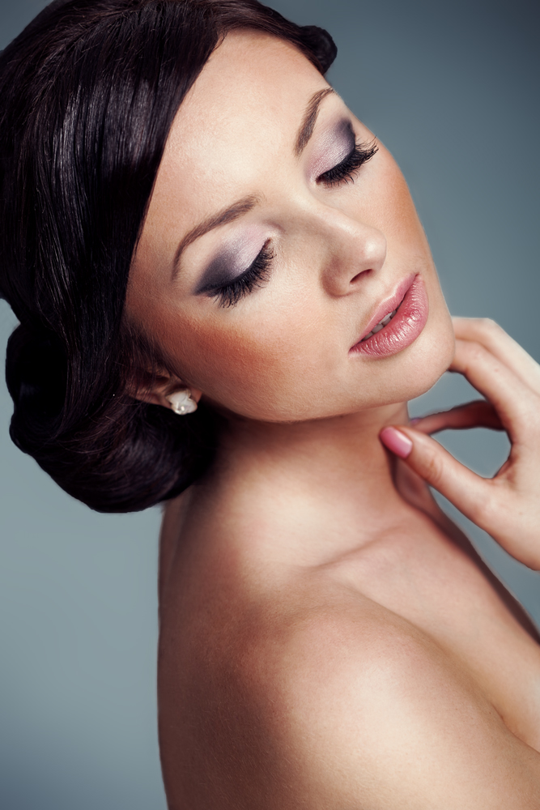
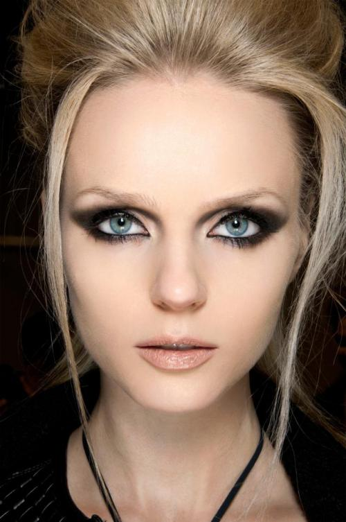

Makijaż wieczorowy
Zasady makijażu
światło i kolor
Makijaż wieczorowy warto wykonywać w świetle, w którym później będziemy przebywały – najczęściej jest to ciepłe światło żarowe. Kolory makijażu powinny współgrać z naszą stylizacją i typem urody – wybierz mocniejsze, intensywniejsze barwy, niż te, które stosujesz na dzień. Jeśli w ciągu dnia lubisz podkreślić powieki delikatnym brązem, wieczorem spróbuj zastosować cień w odcieniu czekolady. Uważaj na odcień podkładu – w ciągu dnia może być ton jaśniejszy od naturalnego kolorytu skóry, wieczorem możesz wybrać odrobinę ciemniejszy kolor. W przeciwnym przypadku Twoja twarz będzie wyglądała zbyt blado (szczególnie na zdjęciach wykonywanych z lampą błyskową).przygotowanie twarzy
Odpowiednio wypielęgnowana cera to podstawa trwałego i perfekcyjnego makijażu. Przed wykonaniem makijażu na wieczór powinnaś poświęcić jej szczególną uwagę. Zacznij od oczyszczenia skóry twarzy i szyi i wykonania delikatnego peelingu (wybierz drobnoziarnisty lub enzymatyczny). Następnie nałóż swoją ulubioną maseczkę i spłucz ją obficie wodą. Zastosuj tonik i wklep w skórę lekki, beztłuszczowy krem. Poczekaj, aż produkt się wchłonie. Dzięki tym zabiegom kosmetyki kolorowe lepiej stopią się ze cerą, która będzie wyglądała naturalnie i zdrowo. Pamiętaj również o pielęgnacji oczu i ust – pod oczy wklep delikatny krem nawilżający, usta możesz wygładzić naturalnym peelingiem z cukru i miodu, a następnie pokryć ochronnym balsamem.przedłużenie trwałości
Jeśli pragniesz, by Twój makijaż wytrzymał do rana nie obejdziesz się bez bazy. Dostosuj ją do swoich potrzeb – bazy mają właściwości matujące, rozświetlające lub liftingujące. Delikatnie rozgrzej ją w palcach i rozprowadź na twarzy i powiekach. Pamiętaj, by nie przesadzić z ilością produktu – osiągniesz efekt odwrotny od zamierzonego! Odradzam stosowanie preparatów utrwalających makijaż w spreju – uniemożliwiają one dokonywanie późniejszych poprawek.najpierw oczy
Jeśli pragniesz mocniej podkreślić oczy to od nich zacznij wykonywanie makijażu – gdy cienie osypią Ci się na policzki, z łatwością poprawisz je przed nałożeniem podkładu. Klasycznym sposobem malowania oczu na wieczór jest technika smoky-eye. Przygotuj kredkę, cienie i tusz w podobnej tonacji kolorystycznej. Rozpocznij makijaż od grubej kreski wzdłuż lini dolnych i górnych rzęs (jeśli zależy Ci na powiększeniu oka pomaluj tylko 1/3 dolnej powieki) i rozetrzyj ją pędzelkiem. Następnie rozpocznij cieniowanie powieki nakładając najciemniejszy cień w zewnętrznym kąciku, najjaśniejszy w wewnętrznym i pod łukiem brwiowym. Zadbaj o łagodne przejścia kolorów – użyj w tym celu miękkiego pędzelka. Na koniec dokładnie wytuszuj rzęsy.efekty specjalne
Połyskujące cienie, sztuczne rzęsy i brokat świetnie sprawdzają się w makijażu wieczorowym. By uniknąć efektu przesady musisz je zastosować w odpowiedni sposób. Pyłki i brokaty nakładaj punktowo, najlepiej palcem – w centralnej części powieki lub kąciku oka. Jasny połyskujący cień możesz zaaplikować w wewnętrznych kącikach oczu, na szczycie kości policzkowych i nad górną wargą – w ten sposób uwypuklisz te miejsca i nadasz twarzy trójwymiarowości. Jeśli nakładanie sztucznych rzęs sprawia Ci problem, wypróbuj rzęsy w kępkach lub przetnij tradycyjny pasek na pół i przyklej rzęsy tylko w zewnętrznych kącikach.perfekcyjna cera
Poszukaj podkładu o przedłużonej trwałości – zazwyczaj są to produkty kryjące i matujące. Jeśli masz bardzo suchą, wrażliwą cerę wybierz odżywczy podkład mineralny. By uzyskać profesjonalny efekt i perfekcyjne wymodelować twarz, zastosuj dwa kolory podkładu – jaśniejszy i ciemniejszy. Jasny odcień nałóż w centralnej części czoła, wzdłuż grzbietu nosa, na szczycie kości policzkowych oraz brodzie. Ciemniejszy na skroniach, pod kością policzkową i żuchwie. Dokładnie rozetrzyj przejście koloru. Pod oczy nałóż lekki korektor rozświetlający i delikatnie rozklep go palcami. Całość utrwal transparentnym pudrem.wymodelowane policzki
Wypróbuj trik, który stosuje wiele gwiazd i podkreśl kości policzkowe techniką hollywoodzką. W tym celu potrzebujesz 3 produktów – bronzera, różu i rozświetlacza. Wciągnij policzki i dokładnie rozetrzyj bronzer pod kością policzkową. Następnie uśmiechnij się i na szczycie kości delikatnie zaaplikuj róż. Dla pełnego efektu nałóż odrobinę rozświetlacza tuż nad linią różu. Zapewnia to wspaniały efekt, również na zdjęciach.trwały makijaż ust
Niezależnie od tego, czy usta grają pierwsze skrzypce w twojej stylizacji, czy są tylko delikatnym dodatkiem do mocno podkreślonych oczu, na pewno zależy Ci, by ich makijaż był perfekcyjny i trwały. Zacznij od wypełnienia warg konturówką – niezależnie od tego jaki kolor pomadki wybrałaś wybierz taką, której odcień jest zbliżony do naturalnego koloru Twoich ust. Następnie nałóż pomadkę – zrób to przy użyciu małego pędzelka i zadbaj o precyzyjną linię. Odciśnij nadmiar produktu na chusteczce i ponownie nałóż pomadkę. Środek ust wypełnij połyskującym, bezbarwnym błyszczykiem.dopracuj detale
Jeśli chcesz, by twój makijaż był dopracowany do perfekcji musisz zadbać o każdy szczegół. Nie zapomnij o brwiach – nawet jeśli są wyraziste z natury podkreśl łuk przy użyciu kredki lub cieni. Jeśli upinasz wysoko włosy, pokryj podkładem również szyję i uszy – szczególnie jeśli często się czerwienią. Na dekolt i ramiona możesz nałożyć połyskujący puder lub bronzer – użyj w tym celu dużego pędzla.spakuj kosmetyczkę
Do torebki spakuj bibułki matujące, puder wraz z pędzlem, błyszczyk i pomadkę – przydadzą się do ewentualnych poprawek.Smoky Eyes
 Smoky Eyes, czyli „przydymione oko”, to bardzo efektowny makijaż, wymagający jednak umiejętności i odpowiedniej techniki.
Smoky Eyes jest techniką bardzo trudną dla osób początkujących. Wymaga umiejętności posługiwania się kosmetykami matowymi, sypkimi i w kamieniu, a także stosowania odpowiednich instrumentów. W niektórych paryskich szkołach przyszli wizażyści uczą się tej sztuki przez dwa lata. Ćwiczy się umiejętność rozcierania jednego koloru, aby płynnie przechodził od ciemnego do jasnego odcienia. Taki wynik można osiągnąć wyłącznie z pomocą pędzelka, nigdy aplikatora. Świadectwem poziomu profesjonalizmu wizażysty jest umiejętność użycia eyelinera, a także wykonania klasycznego makijażu Smoky Eyes, który obowiązuje każdego wizażystę na egzaminie końcowym w Szkole Wizażystów.
Smoky Eyes to nic innego jak wskrzeszony makijaż Kleopatry i najstarsza technika upiększania oczu. Należy do klasyki makijażu i co jakiś czas jest lansowany w odnowionych wersjach, raz jako odmiana zupełnie matowa, a raz w kolorach cielistych, opalizujących i połyskujących. Jest typowym makijażem wieczorowym – intensywnym i bardzo efektownym. Chętnie wykorzystywany jest w artystycznych przedsięwzięciach, na przykład w reklamach. Jest także makijażem scenicznym, dobrze prezentuje się na pokazach mody, sesjach fotograficznych czy pokazach makijażu. Jest wreszcie ulubionym makijażem angielskich wizażystek.
Technika wykonania:
Makijaż oka rozpoczynamy zwykle od najjaśniejszych kolorów, jednak kolejność w technice Smoky Eyes jest odwrotna. Spowodowane jest to dominującym w tym rodzaju makijażu czarnym pigmentem.Kolejność wykonywania makijażu:
- Zaznaczamy kontur oka czarnym eyelinerem, na górnej i dolnej krawędzi wewnętrznej powieki.
- Cake, czyli kremowy eyeliner o konsystencji stałej, rozprowadzamy między rzęsami za pomocą pędzelka do eyelinera lub nowego pędzla do ust.
- Pozostałą część nakładamy na powiekę ruchomą pędzelkiem o szerokości 8 mm z włosia Kolinsky.
- Czarnym matowym aplikatorem (kosmetyk, który już zawiera aplikator) pogłębiamy kontury oka u nasady rzęs.
- Na tak przygotowaną powiekę aplikujemy pędzelkiem punktowym z włosia wiewiórki syberyjskiej czarny, matowy cień. Jeśli takiego aplikatora brak, cień matowy aplikujemy bezpośrednio na rozcieniowany cake lub kredkę, tuż przy krawędzi rzęs. Cała sztuka polega teraz na roztarciu go w sposób widoczny, ale zarazem delikatny, żeby przechodzenie koloru było płynne. Aby stworzyć jeszcze bardziej miękkie przejścia, możemy przypudrować pudrem sypkim granicę ostatniego koloru.
- Miejsce między powieką ruchomą i nieruchomą, gdzie normalnie podkreślamy oko ciemniej, teraz jest najjaśniejsze, tzw. cień banana jest jakby muśnięty piórkiem. Małą ilość np. szarego cienia i transparentnego pudru sypkiego nakładamy jako ostatni element makijażu, osiągając przydymione oko.
- Teraz możemy rozjaśnić przestrzeń pod brwią i zaznaczyć subtelnie kształt nosa (tzw. modelaż).
- Stosujemy płynny czarny eyeliner, malując kreskę na powiece górnej. Wzmacniamy tym samym trójwymiarowość makijażu.
- Tuszujemy mocno rzęsy lub przyklejamy sztuczne.
- Kayalem poprawiamy kontur oka. Należy pamiętać, że osoby noszące szkła kontaktowe powinny zrezygnować z malowania wewnętrznej krawędzi powieki. Soczewki wyjmujemy przed wykonaniem makijażu.
W klasycznym Smoky Eyes używa się tylko czarnego matowego koloru. W innych wersjach tego makijażu możemy dodać kolor szary, brązowy, cielisty, fioletowy, bordowy, butelkowo zielony, granatowy, aż bo chabrowy. Można też użyć na powiekach opalizującego światła lub diamentowego pyłku. Zastosowanie czarno-srebrnego brokatowego eyelinera 1014 na powiece ruchomej zapewnia spektakularny efekt, doskonały na wielkie wyjście.